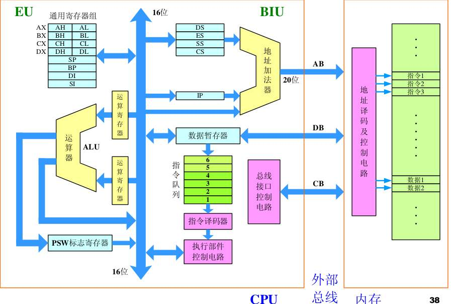
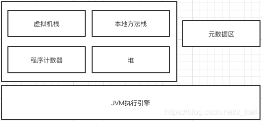
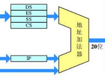

发布于
Java虚拟机到底虚拟了什么
最近阅读新版的《深入理解Java虚拟机》有了自己实现一个虚拟机的想法，在完成阶段性的目标后重新认识了一下JVM，希望记录并且分享。本文主要为了总结Java虚拟机是什么，本文并不会介绍内存，GC，类加载器这些面试类的“知识要点”，而是期望总结清楚最本质的东西。
可执行文件与Class文件
我们先来看一段汇编代码
Hello, OS world!程序：
org 07c00h
mov ax, cs
mov ds, ax
mov es, ax
call DispStr
jmp $
DispStr:
mov ax, BootMessage
mov bp, ax
mov cx, 16
mov ax, 01301h
mov bx, 000ch
mov dl, 0
int 10h
ret
BootMessage: db "Hello, OS world!"
times 510-($-$$) db 0
dw 0xaa55
这段代码是在用于计算机的引导扇区中的，我们将它编译后保存在硬盘的引导扇区上让后设置BIOS从该硬盘启动，就会执行这段代码，在显示器上输出一个“Hello, OS world!”。
我们知道计算机在开机的时候会先执行BIOS的代码，这部分代码是由主板的厂商提供的预先保存在主板的ROM中，然后跳转到引导设备的07c00h地址开始执行指令，所以上述代码中我们使用org指令从07c00h开始分配存储空间，即mov ax, cs这个指令被保存在07c00h地址上。 这样我们就看到了最本质的程序，一段程序直接运行在物理主机上，没有Windows或者Linux这样的操作系统。
现在我们回到Class文件上
我们用javap来看一段Hello world程序编译后class的结构 “javap -verbose Test”
Classfile /Users/dim/IdeaProjects/untitled/target/classes/Test.class
Last modified 2020年4月18日; size 515 bytes
MD5 checksum ad0d0d889ae47100c8b9bdd620fb0948
Compiled from "Test.java"
public class Test
minor version: 0
major version: 52
flags: (0x0021) ACC_PUBLIC, ACC_SUPER
this_class: #5 // Test
super_class: #6 // java/lang/Object
interfaces: 0, fields: 0, methods: 2, attributes: 1
Constant pool:
#1 = Methodref #6.#20 // java/lang/Object."<init>":()V
#2 = Fieldref #21.#22 // java/lang/System.out:Ljava/io/PrintStream;
#3 = String #23 // Hello world
#4 = Methodref #24.#25 // java/io/PrintStream.println:(Ljava/lang/String;)V
#5 = Class #26 // Test
#6 = Class #27 // java/lang/Object
#7 = Utf8 <init>
#8 = Utf8 ()V
#9 = Utf8 Code
#10 = Utf8 LineNumberTable
#11 = Utf8 LocalVariableTable
#12 = Utf8 this
#13 = Utf8 LTest;
#14 = Utf8 main
#15 = Utf8 ([Ljava/lang/String;)V
#16 = Utf8 args
#17 = Utf8 [Ljava/lang/String;
#18 = Utf8 SourceFile
#19 = Utf8 Test.java
#20 = NameAndType #7:#8 // "<init>":()V
#21 = Class #28 // java/lang/System
#22 = NameAndType #29:#30 // out:Ljava/io/PrintStream;
#23 = Utf8 Hello world
#24 = Class #31 // java/io/PrintStream
#25 = NameAndType #32:#33 // println:(Ljava/lang/String;)V
#26 = Utf8 Test
#27 = Utf8 java/lang/Object
#28 = Utf8 java/lang/System
#29 = Utf8 out
#30 = Utf8 Ljava/io/PrintStream;
#31 = Utf8 java/io/PrintStream
#32 = Utf8 println
#33 = Utf8 (Ljava/lang/String;)V
{
public Test();
descriptor: ()V
flags: (0x0001) ACC_PUBLIC
Code:
stack=1, locals=1, args_size=1
0: aload_0
1: invokespecial #1 // Method java/lang/Object."<init>":()V
4: return
LineNumberTable:
line 1: 0
LocalVariableTable:
Start Length Slot Name Signature
0 5 0 this LTest;
public static void main(java.lang.String[]);
descriptor: ([Ljava/lang/String;)V
flags: (0x0009) ACC_PUBLIC, ACC_STATIC
Code:
stack=2, locals=1, args_size=1
0: getstatic #2 // Field java/lang/System.out:Ljava/io/PrintStream;
3: ldc #3 // String Hello world
5: invokevirtual #4 // Method java/io/PrintStream.println:(Ljava/lang/String;)V
8: return
LineNumberTable:
line 3: 0
line 4: 8
LocalVariableTable:
Start Length Slot Name Signature
0 9 0 args [Ljava/lang/String;
}
SourceFile: "Test.java"
当我们运行启动JVM的时候指定执行某个class或者Jar包，虚拟机就会从指定class的Main方法开始执行“java Test”
这个过程就好比我们将一个写有“Hello, OS world!”程序的设备安装到了物理机器上从BIOS指定从这个设备进行引导。在JVM启动时可以通过Jar包的META-INF目录读取配置的代码入口，也可以在启动JVM时直接指定。
事实上他们都是以同一种方式开始一段程序的执行，找到07c00h地址对应的指令或者Main方法的第一条指令，至于为什么是07c00h和Main方法，这更多是一种规范，技术上你可以开发一个新的BIOS程序或者JVM从你喜欢的地方开始执行。
有的人可能会觉得一段C代码的入口也是main函数为什么JVM不是类比一个操作系统呢？首先C代码中的main入口是提供给操作系统调用的，因为操作系统的本质是一个硬件的管理功能，JVM中的一些功能是类似于操作系统的功能，比如GC，但是本文不对这些功能做讲解是为了更好的体现JVM的本质（实际上，在阅读JVM规范的时候你会发现文档中很少有提及这些类似于操作系统的功能，像垃圾回收这些相关的文档可能需要去阅读各虚拟机的具体实现的文档如HotSpot，因为它们不是必须的）
CPU结构与JVM结构

这是我在网络上找的一个图片8086CPU的内部结构，我们试着解释一段汇编的代码
mov ax, cs //将寄存器cs的值传送到ax
mov ds, ax//将寄存器ax的值传送到ds
mov es, ax//将寄存器ax的值传送到es
call DispStr//调用DispStr
其实这些CPU的指令都是做着这些非常基本的工作，移动某个寄存器的数据到另一个地方，从某个设备读取数据

我先不去管本文中不关心的部分 主要来看一下程序计数器和虚拟机栈（堆内存更像是一台计算机的主存） 我们知道程序计数器是一个线程私有的区域它主要用于表示当前执行到哪条指令，类似的功能在8086CPU上可以通过段地址寄存器加上IP寄存器或者某个偏移量

图中的部分最终输出的20地址就是JVM中程序计数器的工作 再来看虚拟机栈的内容
每次JAVA的方法调用都会产生一个栈针（实际上栈针的概念类似与CPU相应中断的时候保存上下文执行完中断后再返回的步骤），栈针不仅包含图中的信息但是我们目前关系的仅仅是操作数栈，JVM的指令基本都是通过操作数栈实现的，这里和CPU的结构有点不太一样，其实只是两种设计而已，他们实现相同的功能。
比如在CPU中我们可以用ADD指令进行加法运算
add ax,bx//将ax寄存器的值加上bx寄存器的值在赋值给ax
而对应的在JVM中我们可以做类似的加法运算
iadd //从操作数栈中弹出两个int值相加后压入操作数栈
JVM的执行引擎类似与运算器和寄存器，但是他们采用了不同的实现。
总结
JVM的本质其实是一个可以更具特定指令进行特定数据操作的程序，它使用软件模拟实现CPU中逻辑电路实现的基本指令功能，Java语言通过编译器将代码编译成这些最基本的二进制指令来告诉这个程序如何操作特定内存模型中的数据，通过对基本指令的组合实现一个较为复杂的方法，再通过对较为复杂方法的组合实现一个特定功能，业务就是这样被实现的。